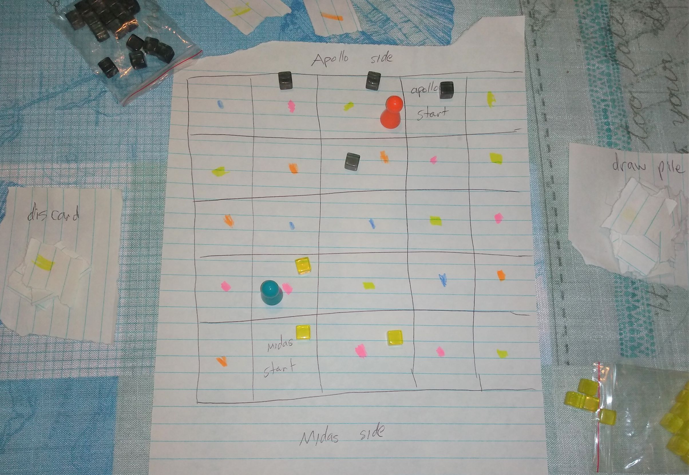
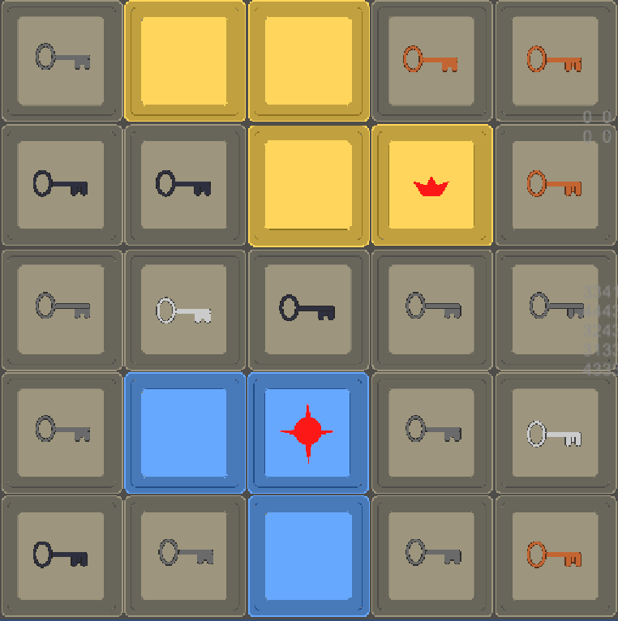
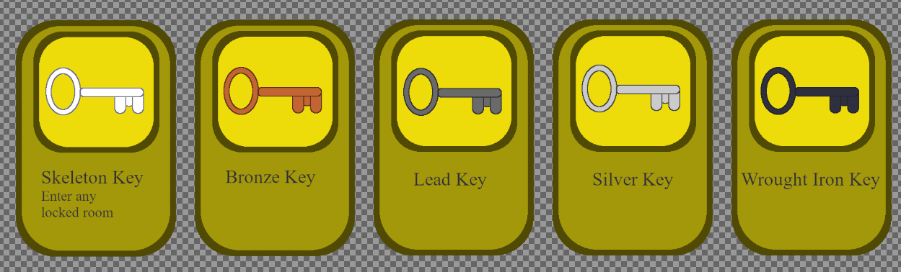
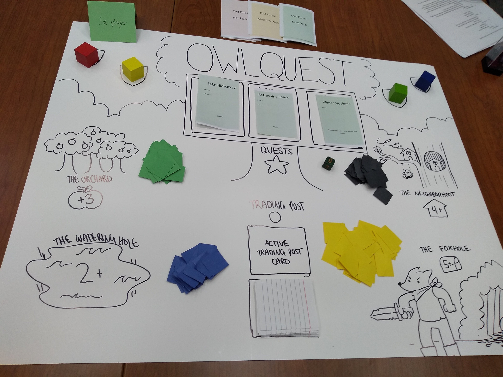
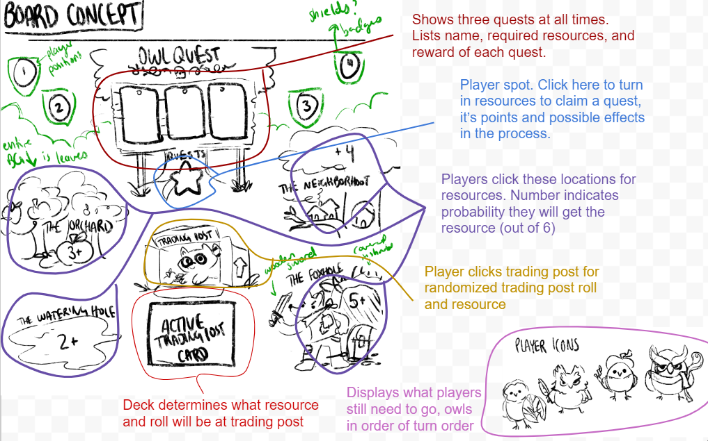
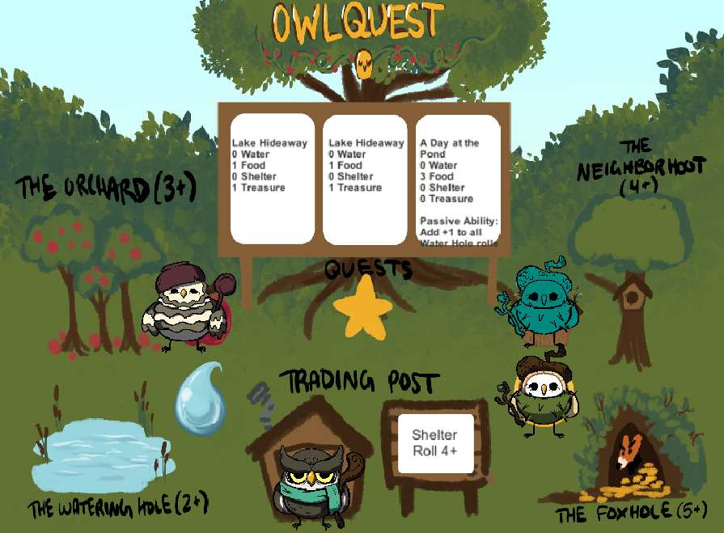

Below are some key examples of games I led or heavily assisted in working on.
Greedy Midas is a two-player competitive game where each player wants to claim over half of the rooms on the board before the other. I led this project and it was completed in Unity.
  Protagonist is a game that I worked on with a team of students during my time at the Game Design and Development Club. I worked mostly on dialogue and reference pages for this game, some examples of this are listed on my writing page. A link to the game demo is listed below.
Click here for the game demoOwlQuest is a cute, family-friendly strategic game where you collect various resources on the board to complete enough quests to win the game before other players can. This game is designed group of four, where my main contributions are in the wireframe, flowcharting and general game design, and Unity coding as well as more minor contributions to style. The clickable computer prototype is complete and we are currently adding touch controls because this game is meant for the iPad.
  1861: Life on the Battlefield was an ambitious analog strategy board game made in my Game Design class with two other people. One player controls four civilians and the other controls one soldier, and the goal of the game is to survive 15 rounds. While it may be advantageous to be cooperative, the game is meant to be very difficult to survive so the players may turn on eachother to get the resources they need.